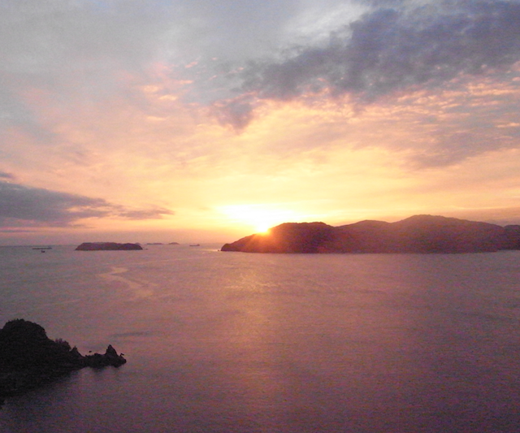

Yoshiki Uchida's Homepage
last update: 2019/11/27
If you are interested in, please contact us!

11 Sep. 2018 @Yamaguchi
Career
2016-2018 MAS Nagoya Univ.
Affiliation
Nagoya University
(Furo-cho, Chikusa-ku, Nagoya Aichi 464-8602, Japan)
Room: E and S Building 7F ES710
E-mail
uchida[at]eken.phys.nagoya-u.ac.jp
Publication
Presentation
Experience of TA
- tuter of "experiment in basic engineering（基礎工学実験）" @Daido Univ.
Certificates
- Junior High School Specialized Teacher’s Certificate (Science)
- High School Specialized Teacher’s Certificate (Science)
This webpage is desinged using codes here